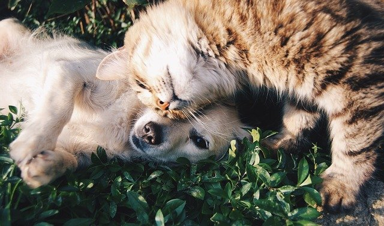

Los amigos no se compran, se adoptan
Como bien dicen, los perros son los mejores y más fieles amigos de los hombres. Estos animales nos brindan felicidad y alegría
incluso en los peores días y nos regalan momentos únicos de diversión que no podríamos compartir con nadie más.
Una casa no es un hogar sin cuatro patas y una cola moviéndose de felicidad.

Mi raza favorita es: adoptado

El mejor terapeuta tiene cola y cuatro patas
para muchos las mascotas no son simples compañeros sino mienbros de la familia
Ellos

Quieren

Un

Hogar
Los amigos no se compran, se adoptan
Sin duda, las mascotas se han convertido en un miembro más de la familia. Cada día son más valoradas, pues más allá de brindar diversión y compañía, su presencia
tiene un impacto positivo en la salud física y mental de las personas, haciendo que la calidad de vida y la sensación de bienestar aumente.
Es el caso de Marcela, a quien le cambió
la vida después de conocer a Ramona, una perra criolla que, según dice, le da “amor verdadero”. “Cuando llego a casa y ella enloquece, y salta de felicidad por verme, eso
me cambia totalmente el ánimo. Puedo estar cansada y estresada, pero ella
me recibe así y me hace feliz”, cuenta. Precisamente, ese bienestar que ofrecen
es uno de los principales beneficios de las mascotas en la vida de las personas.
| Descripcion | |||||||||||||||||
|---|---|---|---|---|---|---|---|---|---|---|---|---|---|---|---|---|---|
| inf | 2000 | 2001 | 2002 | 2003 | 2004 | 2005 | 2006 |  |
|||||||||
| PERROS | |||||||||||||||||
| Ingresos | 2.701 | 1.510 | 1.545 | 2.132 | 1.925 | 1.585 | 1.585 | ||||||||||
| Rescates | 2.701 | 1.510 | 1.545 | 2.132 | 1.925 | 1.585 | 1.585 | ||||||||||
| Adopciones | 2.701 | 1.510 | 1.545 | 2.132 | 1.925 | 1.585 | 1.585 | ||||||||||
| Eutanacias | 2.701 | 1.510 | 1.545 | 2.132 | 1.925 | 1.585 | 1.585 | ||||||||||
| Muertes naturales | 2.701 | 1.510 | 1.545 | 2.132 | 1.925 | 1.585 | 1.585 | ||||||||||
| GATOS |  |
||||||||||||||||
| Ingresos | 2.701 | 1.510 | 1.545 | 2.132 | 1.925 | 1.585 | 1.585 | ||||||||||
| Rescates | 2.701 | 1.510 | 1.545 | 2.132 | 1.925 | 1.585 | 1.585 | ||||||||||
| Adopciones | 2.701 | 1.510 | 1.545 | 2.132 | 1.925 | 1.585 | 1.585 | ||||||||||
| Eutanacias | 2.701 | 1.510 | 1.545 | 2.132 | 1.925 | 1.585 | 1.585 | ||||||||||
| Muertes naturales | 2.701 | 1.510 | 1.545 | 2.132 | 1.925 | 1.585 | 1.585 | ||||||||||